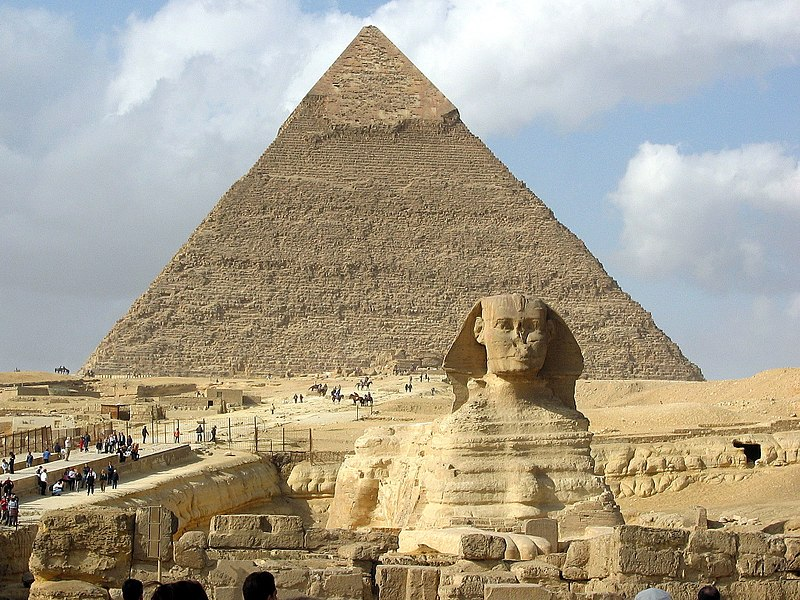

Древний Египет
Дре́вний Еги́пет (от др.-греч. Αἴγυπτος и лат. Aegyptus) — название исторического региона и культуры значительной цивилизации Древнего мира, существовавшей на северо-востоке Африки вдоль нижнего течения реки Нил. Сами древние египтяне называли свою страну Та-Кемет (транслит. егип. tꜣ-kmt), Та-мери (tꜣ-mrj), Та-уи (tꜣwj); а копты — Ке́ми (копт. Ⲭⲏⲙⲓ).
История Древнего Египта насчитывает около 40 веков и подразделяется исследователями на додинастический период (относится к финалу доисторического периода, краткий обзор которого также приводится в статье), династический период (основной этап существования египетской цивилизации протяжённостью около 27 веков), эллинистический период (синтез с греко-македонской культурой под властью династии Птолемеев), римский период (в составе древнеримского государства, как одна из важнейших провинций Римской империи). Временные границы существования древнеегипетской культуры, принятые исследователями, охватывают период с середины IV тысячелетия до н. э. до IV век н. э. Византийско-коптский период (в составе Византии) хотя и относится уже к раннему средневековью, при этом также иногда рассматривается в рамках изучения Древнего Египта. Временные границы начинаются с IV века и заканчиваются арабским завоеванием в VII веке.
Возвышение древнеегипетской цивилизации в большой степени было результатом её способности адаптироваться к условиям речной долины и дельты Нила. Регулярные ежегодные разливы, удобряющие почву плодородным илом, а также организация ирригационной системы земледелия позволяли производить зерновые культуры в избыточном количестве, обеспечивавшем социальное и культурное развитие. Концентрация людских и материальных ресурсов в руках администрации способствовала созданию и поддержанию сложной сети каналов, появлению регулярной армии и расширению торговли, а с постепенным развитием горнодобывающего дела, полевой геодезии и строительных технологий давала возможность организовывать коллективные возведения монументальных сооружений. Принуждающей и организующей силой в Древнем Египте был хорошо развитый государственный аппарат, состоявший из жрецов, писцов и администраторов во главе с фараоном, который часто обожествлялся в сложной системе религиозных верований с развитым культом погребальных обрядов.
Древний Египет оставил огромное культурное наследие для мировой цивилизации, произведения его искусства ещё в древности вывозились в различные уголки мира и широко копировались мастерами других стран. Своеобразные архитектурные формы — величественные пирамиды, храмы, дворцы и обелиски вдохновляли воображение путешественников и исследователей в течение многих столетий. Египетскими мастерами создавались прекрасные настенные росписи и статуи, были освоены способы производства стекла и фаянса, поэтами и писателями созданы новые формы в литературе. В числе научных достижений древних египтян было создание оригинальной системы письма, математика, практическая медицина, астрономические наблюдения и возникший на их основе календарь. Интерес к памятникам, артефактам и археологическим раскопкам в Древнем Египте, возникший на рубеже XVIII—XIX веков, привёл к созданию науки египтологии и возникновению направлений искусства (египтомания, египтизирующий стиль).
Фараоны
Фарао́н (др.-рус. фараонъ, ст.‑слав. фарао, от греч. Φαραώ / pharaōn) — современное наименование правителей Древнего Египта. В течение большей части египетской истории оно не было официальным титулом, а возникло первоначально в эпоху Нового царства как эвфемизм, позволяющий обойтись без упоминания царского имени и перечисления официальных царских титулов, и особенно распространилось к середине I тысячелетия до н. э.
Первые раннегосударственные образования — номы — появились в долине Нила не позднее середины IV тысячелетия до н. э. Довольно скоро в этих протогосударствах возникла неограниченная наследственная власть правителей, сочетавших функции военачальников, жрецов и руководителей хозяйства, и началось их укрупнение. Правителей этой промежуточной стадии условно объединяют в «нулевую династию». После объединения Верхнего Египта и захвата царями Нармером и Миной (Менесом) Дельты Нила (XXXI век до н. э.) агрессивный военный характер этих монархий начал смягчаться. Одновременно с развитием бюрократического аппарата и переводом хозяйства в прямое подчинение монарху шла сакрализация его власти, особенно при Джосере и его преемниках. Царь стал рассматриваться как гарант благосклонности богов к стране. Начиная с IV династии, он ассоциируется уже не столько с богом Хором, сколько с богом солнца Ра, сыном которого и считается. Тогда же одна за другой были построены Великие пирамиды, олицетворявшие исключительную мощь и величие правителей того времени.
С упадком Древнего царства, началом климатического кризиса XXIII—XXII вв. до н. э. и вступлением Египта в I Переходный период могущество и авторитет царей ослабли, возросло влияние и богатство знати и государственных чиновников. VIII династия утратила всеобщий контроль над страной, возникли местные независимые династии, которым не удавалось поддерживать прежний уровень общественного благосостояния. Эпоха Среднего царства так полностью и не вернула египетским царям потерянного уровня власти, хотя прочно объединившая Египет и восстановившая централизованную экономику XII династия смогла даже перейти к агрессивной внешней политике. Самый активный завоеватель Сенусерт III впоследствии стал основным прототипом легендарного Сесостриса. После же распада Среднего царства и завоевания Нижнего и большей части Верхнего Египта гиксосами страной стала править гиксосская XV династия, обладавшая полноценным сакральным статусом и возвысившая культ Сета.
Когда фиванским правителям Камосу и Яхмосу I удалось изгнать гиксосов и основать Новое царство, Египет оказался в новом политическом положении: несмотря на продолжение завоеваний на юге и востоке, он больше не был сильнейшей державой известного египтянам мира — у него появились такие могущественные соперники, как царство Митанни, касситская Вавилония и позже Хеттское царство. В результате авторитет фараонов XVIII династии стал основываться в значительной степени на их военных успехах, в том числе личной полководческой и боевой доблести. Тем, кто их не имел (как женщина Хатшепсут и царь-миротворец Аменхотеп III), приходилось усиленно убеждать подданных в своём божественном происхождении. Несмотря на это, морально-идеологическая зависимость общества от царя уже не шла ни в какое сравнение с Древним царством; в частности, египтяне стали ценить личные (а не добытые для царя) успехи и выгоды достаточно высоко, чтобы описывать их в росписях своих гробниц. К концу II тыс. до н. э. децентрализация египетского общества и экономики, рост влияния храмов и номархов закончились распадом Нового царства.
С этого времени фараоны не имели существенного влияния в регионе. Лишь некоторым из них (например, Шешонку I) удавалось объединить Египет и вмешиваться в дела соседних стран. Население и отдельные хозяйства становились всё более независимы от царя, а его сакральная роль посредника между народом и богами очень ослабла. Большинство династий X—VII вв. до н. э. имели ливийское или нубийское происхождение. В 671 г. до н.э. ассирийский царь Асархаддон совершил успешное вторжение в Египет и поставил местных правителей в вассальную зависимость, однако вскоре основатель Позднего царства Псамметих I снова объединил страну и отложился от Ассирии. «Саисское возрождение» закончилось персидским завоеванием. В 525—486 гг. до н. э. фараонами Египта официально считались Ахемениды, но Ксеркс отказался от личной унии и сделал страну простой сатрапией[12]. В 332 г. до н. э. статус фараона принял Александр Македонский, а после смерти последнего он принадлежал Птолемеям, потомкам его диадоха Птолемея I. Вернуть власть национальной элите на короткое время удалось лишь Нектанебу I (380—362 гг. до н. э), фараону XXX (Себеннитской) династии, сумевшему в 374 году до н. э. отразить нашествие войск персидского царя Артаксеркса II.
Древнеегипетская религия
Древнеегипетская религия — система религиозных верований и ритуалов, практиковавшихся в Древнем Египте, начиная с додинастического периода и до принятия христианства. За свою многотысячелетнюю историю древнеегипетская религия прошла через различные этапы развития: от Древнего, Среднего и Нового царств до позднего и греко-римского периода.
Древнеегипетская религия традиционно считается политеистической, хотя в древнем Египте присутствовал ряд культов, имевших генотеистический характер, а также недолго просуществовал культ атонизма, который имеет признаки монолатрии. Этот факт иногда приводит к смешению понятий, некоторые строят теории о скрытой монотеистичности древнеегипетской религии, проводят связи между религией Египта и Израилем.
Доисторические племена долины Нила, как и представители других первобытных культур, во всех многообразных предметах и явлениях природы, недоступных их пониманию, видели проявления могущественных таинственных сил. Типичной формой ранней религии для них являлись фетишизм и тотемизм, испытывавшие различные изменения, под влиянием перехода населения от кочевничества к оседлому образу жизни. Наиболее известные древнеегипетские фетиши: Имиут, камень Бен-Бен, столб Иуну, столб Джед; также от древних фетишей ведут происхождение общеегипетские религиозные символы: Анх, Уаджет, Уас.
В значительной степени на верования первобытных египтян, как и на всю их жизнь, воздействовал Нил, ежегодный разлив которого наносил на берега плодородную почву, что позволяло собирать хорошие урожаи (олицетворение благодетельных сил), но иногда он вызывал значительные бедствия — наводнения (олицетворение сил губительных для человека). Периодичность разлива реки и наблюдение за звёздным небом, позволило с достаточной точностью создать древнеегипетский календарь, благодаря этому египтяне рано овладели основами астрономии, что также отразилось на их верованиях. В возникающих первых поселениях-городах египтян имелись различные божества, свои для каждой отдельной местности, обычно в форме материального фетиша, но значительно чаще в виде животного — тотема.
Считается, что сначала египтяне почитали животных за их мощь и силу, вызывавшие ужас и страх у человека. В дальнейшем же возникло представление о том, что определённые животные являются вместилищем божественного начала.
Обожествление животных в династическом Египте имело место на протяжении веков, восходя к доисторическому тотемизму, с которым в ряде случаев было сильно сближено, фактически составляя явления одного порядка. Номы и города часто сопоставлялись и были связаны со своими богами-животными, что отражалось в их названиях (см. список номов Древнего Египта), также многие иероглифы египетского письма представляли собой символы зверей, птиц, пресмыкающихся, рыб и насекомых, являвшихся идеограммами обозначавшими каких-либо божеств
Погребальный культ
Мысли о необходимости сохранения тела для будущей жизни привели к возникновению культа умерших, прошедшему через всю египетскую культуру. Культ умерших был для египтян не отвлечённой религиозной обязанностью, а как бы практической необходимостью. Искусство Древнего Египта выросло из религиозных представлений египтян.
Убеждение в том, что человек после смерти продолжает существовать в месте своего погребения, привело к изобретению мумификации — особой консервации тела. Первым мастером мумификации считался сам бог Анубис — бог бальзамирования, владыка древнеегипетского некрополя, проводник душ умерших, сделавший мумию Осириса.
Осирис один из старейших богов, которому в Египте поклонялись с древнейших времён, первоначально олицетворял собой заходящее солнце. Но в дальнейшем Осирис становится богом загробного мира. После того как его убивает его брат Сет и воскрешает жена и сестра Исида, а его сын Гор (покровитель живущих фараонов, его изображали в виде сокола) мстит за смерть отца. Осирис обычно изображается с анхом - символом жизни - в одной руке и скипетром - в другой.
Мумификация
Исида, Анубис и Нефтида совершают обряд над мумией. Роспись в гробнице TT335 Нахтамона. Период правления Рамсеса II Основная статья: Мумификация в Древнем Египте
Одним из важнейших аспектов погребального культа является мумификация или бальзамирование тела умершего, проводившаяся жрецами определённого сана. Примитивные мумии, обработанные консервирующими веществами и обёрнутые несколькими слоями ткани, найдены в комплексах, которые относят к началу династического периода. Ко времени V династии в этой области уже были достигнуты определённые успехи. Через разрез на нижней части тела извлекали внутренние органы человека, оставляя на месте только сердце, а образовавшуюся пустоту заполняли льняной тканью и благовониями. Мумию укладывали в вытянутом положении. В эпоху Нового царства этот процесс усовершенствован. Через специально проделанное в черепе покойника отверстие стали извлекать мозг, а ткань пропитывали веществами, предохранявшими её от тления.
Наивысшего расцвета искусство мумификации достигло в эпоху XXI и XXII династий. На коже покойника делали несколько разрезов; под кожу вводили песок и глину для придания останкам формы живого человека и раскрашивали его красной охрой. Умершему красили губы и щёки в красный цвет, вставляли искусственные глаза, тело туго запеленывали в ткани со сложным разноцветным узором и обычно помещали в деревянный саркофаг, который вырезался антропоморфной формы.
Практически все мумии из Нижнего Египта утрачены. В Верхнем Египте значительное их количество сохранилось в поразительно хорошем состоянии, в том числе мумии наиболее известных фараонов — Тутанхамона, Тутмоса III, Тутмоса IV, Аменхотепа II, Сети I и Рамсеса II (все ныне находятся в Каирском музее).
Погребальный культ включает в себя множество составляющих, помимо обрядов и ритуалов. Последним составляющим является место захоронения человека, для фараонов и знати — это пирамиды и гробницы, для простого человека — пески Саккары.
Архитектура Древнего Египта
Архитектура Древнего Египта — тип архитектуры цивилизации Древнего Египта, развившейся вдоль побережья Нила в условиях жаркого климата и определённого растительного мира. На протяжении многовековой истории отличается консерватизмом.
Точные археологические даты установить невозможно: при настоящем состоянии наших знаний приходится классифицировать памятники в порядке следования современных им династий или эпохам: архитектура Раннего царства, архитектура Древнего Царства, архитектура Среднего царства, архитектура Нового царства, архитектура Позднего царства и архитектура эллинистического Египта.
Древний Египет, положивший начало архитектуре, был страной, лишённой строительного леса. Деревьев было так же мало, как и в других оазисах африканской пустыни, основная растительность — пальмы, дающие дерево плохого качества, и тростник. Всё это во многом определило то, что основными строительными материалами были необожженный кирпич-сырец и камень, главным образом, известняк, добываемый в Нильской долине, а также песчаник и гранит. Камень использовался в основном для гробниц и захоронений, в то время как кирпич шёл на постройку дворцов, крепостей, зданий в окрестностях храмов и городов, а также вспомогательных сооружений для храмов.
Древнеегипетские дома строили из грязи, добываемой в Ниле. Её оставляли на солнце, чтобы она высохла и стала пригодной для строительства.
Отличительные особенности древнеегипетской архитектуры:
- внутренние дворы, сады;
- открытые навесы-галереи;
- плоские крыши, использующиеся как террасы.(строгая симметрия, геометризм форм, ритмическое повторение идентичных образов, тяжесть, огромные размеры, грандиозность, величие.)
Многие египетские города не сохранились до наших дней, так как располагались в зоне разливов Нила, уровень которого поднимался каждое тысячелетие, в итоге многие города были затоплены, или грязь, использованная для строительства, становилась удобрением для крестьянских полей. Новые города строились на месте старых, поэтому древние поселения и не сохранялись. Однако засушливый климат Древнего Египта сохранил некоторые сооружения из кирпича-сырца — деревня Дейр-эль-Медина, Кахун, город, достигший расцвета в Среднее царство (современный Эль-Лахун), крепостные сооружения в Бухене и Миргиссе.
Основное понимание древнеегипетской архитектуры основано на изучении религиозных памятников, сооружений наиболее сохранившихся. Судя по некоторым сохранившимся колоннам храма в Карнаке египтяне перед укладкой камня кантовали начисто лишь постели[что?] и вертикальные швы; лицевая же поверхность камней обтёсывалась по окончании постройки здания. Этим приёмом пользовались впоследствии греки. Камни клались без раствора и не скреплялись раствором. В фиванскую эпоху металлические скрепления, по-видимому, совершенно не употреблялись, и лишь изредка использовались деревянные скобы в форме ласточкиного хвоста для связи камней между собой (Мединет-Абу, Абидос) или же для скрепления давших трещину монолитов (Луксорский обелиск).
Внешние и внутренние стены, а также колонны и пирсы покрывались иероглифическими и иллюстрированными фресками и резными фигурками. Мотивы украшений египетских зданий символичны и связаны с религиозными или историческими мотивами. Также часто встречаются пальмовые листы, заросли папируса, цветы лотоса. Иероглифы использовались для описания исторических событий, войн, богов, правление фараонов.
Архитектура Раннего царства
Памятники монументального зодчества практически не сохранились, поскольку основным строительным материалом в те годы был легко разрушавшийся кирпич-сырец. Использовались также глина, тростник и дерево, причём сочетание кирпичной облицовки и деревянных балочных перекрытий и декора является важным признаком, позволяющим отнести произведение к сфере искусства Раннего царства. Камень применялся лишь как отделочный материал. К этой эпохе относится тип дворцовых фасадов — «серех», изображения которых встречаются на стелах фараонов I династии. Черты этих сооружений нередко повторялись и в формах царских саркофагов. Культовые и мемориальные постройки сохранились лучше, чем дворцы: это, прежде всего, святилища, сердабы и мастабы. Декорирование святилищ ещё сохраняет связь с эпохой деревянного зодчества, в котором использовался орнаментальный мотив тростниковой плетёнки.
В период Раннего Царства сложились и такие приёмы оформления, как вогнутые карнизы, орнаментальные фризы (живописные или скульптурные) и оформление дверного проёма глубоким уступом.
Многие из традиций храмового зодчества отразились и в стиле мемориальных сооружений, которые были очень важны для древнеегипетской культуры в связи с решающей ролью в ней погребального культа. Погребения I—II династий сосредоточены в районе Мемфиса и Абидоса, ставшими центрами заупокойного культа. С ними связано широкое развитие типа гробниц — мастаб
Архитектура Древнего царства
Приблизительно в XXX веке до н. э. фараоном I династии Нармером, или Менесом, были объединены в единое государство Верхний и Нижний Египет со столицей в Мемфисе.
Создание мощного централизованного государства под властью фараона, который считается сыном бога Ра, продиктовало и основной тип архитектурного сооружения — гробницу, внешними средствами передающую идею его божественности. Наивысшего подъёма Египет достигает при правителях III и IV династий. Создаются самые большие по размерам царские гробницы-пирамиды, над сооружениями которых десятками лет трудились не только рабы, но и крестьяне. Этот исторический период нередко называют «временем пирамид», и его легендарные памятники не были бы созданы без блестящего развития в Египте точных наук и ремёсел.
Одним из ранних памятников монументальной каменной архитектуры является ансамбль погребальных сооружений фараона III династии Джосера. Он возведён под руководством египетского зодчего Имхотепа и отражал замысел самого фараона (впрочем, этот замысел несколько раз претерпевал существенные изменения). Отказавшись от традиционной формы мастабы, Имхотеп остановился на пирамиде с прямоугольным основанием, состоящей из шести ступеней. Вход находился с северной стороны; под основанием были высечены подземные коридоры и шахта, на дне которой располагалась погребальная камера. В заупокойный комплекс Джосера входили также южная гробница-кенотаф с примыкающей к ней молельней и двор для обряда хеб-сед (ритуального возрождения жизненной силы фараона в беге).
Ступенчатые пирамиды возводили и другие фараоны III династии (пирамиды в Медуме и Дахшуре); одна из них имеет ромбовидные контуры.
Пирамиды Гизы Совершенное выражение идея гробницы-пирамиды нашла в усыпальницах, выстроенных в Гизе для фараонов IV династии — Хеопса (Хуфу), Хефрена (Хафра) и Микерина (Менкаура), которые ещё в древности считались одним из чудес света. Самая большая из них создана зодчим Хемиуном для фараона Хеопса. При каждой пирамиде возводился храм, вход в который находился на берегу Нила и соединялся с храмом длинным крытым коридором. Вокруг пирамид рядами располагались мастабы. Пирамида Микерина осталась незавершённой и достраивалась сыном фараона не из каменных блоков, а из кирпича.
В погребальных ансамблях V—VI династий основная роль переходит к храмам, которые отделываются с большей роскошью.
К концу периода Древнего царства появляется новый тип здания — солнечный храм. Его строили на возвышении и обносили стеной. В центре просторного двора с молельнями ставили колоссальный каменный обелиск с вызолоченной медной верхушкой и огромным жертвенником у подножья. Обелиск символизировал священный камень Бен-Бен, на который по преданию взошло солнце, родившееся из бездны. Как и пирамиды, солнечный храм соединялся крытыми переходами с воротами в долине. К числу наиболее известных солнечных храмов принадлежит храм Ниусерра в Абидосе.
Архитектура Среднего царства
В 2050 году до н. э. Ментухотеп I вновь объединил Египет и восстановил единую власть фараонов под эгидой Фив. Столетия, отделяющие эпоху Среднего царства от времени заката Древнего царства, много значили в духовной жизни египтян. Распад страны, войны, упадок центра и божественной власти фараона — всё это создало почву для развития индивидуализма.
Индивидуализм египтян проявился прежде всего в том, что каждый стал заботиться о собственном бессмертии. Теперь уже не только фараон и вельможная знать, но и простые смертные стали претендовать на привилегии в потустороннем мире. Так возникла идея равенства после смерти, что сразу же отразилось на технической стороне культа умерших. Он очень упростился. Стали излишней роскошью гробницы типа мастаба. Для обеспечения вечной жизни было уже достаточно одной стелы — каменной плиты, на которой были написаны магические тексты и все, что требовалось умершему в загробном мире.
Однако фараоны продолжали строить гробницы в виде пирамид, желая подчеркнуть законность обладания престолом. Правда это были уже не те пирамиды, что возводились в эпоху Древнего царства: размеры их значительно уменьшились, материалом для строительства служили не двухтонные блоки, а кирпич-сырец, изменился и способ кладки. Основу составляли восемь капитальных каменных стен, расходившихся радиусами от центра пирамиды к её углам и середине каждой из сторон. От этих стен под углом в 45 градусов отходили другие восемь стен, а промежутки между ними заполнялись обломками камня, песком, кирпичом. Сверху пирамиды облицовывались известняковыми плитами, соединявшимися друг с другом деревянными креплениями. Так же, как и в Древнем царстве, к восточной стороне пирамиды примыкал верхний заупокойный храм, от которого шёл крытый переход к храму в долине. В настоящее время эти пирамиды представляют собой груды развалин.
Наряду с пирамидами, которые по сути копировали пирамиды Древнего царства, появился новый тип погребальных сооружений, сочетавший в себе традиционную форму пирамиды и скальную гробницу. Наиболее значительным из подобных памятников была усыпальница царя Ментухотепа II в Дейр-эль-Бахри. К ней из долины вела ограждённая каменными стенами дорога в 1200 метров длиной и 32 метра шириной. Главную часть усыпальницы составлял заупокойный храм, оформленный портиком; по центру пандус вел на вторую террасу, где второй портик окружал с трех сторон колонный зал, в центре которого возвышалась сложенная из каменных глыб пирамида. Её основанием служила естественная скала. С западной стороны находился открытый двор, оформленный портиками, с выходами в колонный зал и святилище, вырубленное в скале. Гробница фараона размещалась под колонным залом.
Значительным сооружением эпохи Среднего царства является и заупокойный комплекс фараона Аменемхета III в Хавара. Пирамида сложена из кирпича и облицована известняком, погребальная камера высечена из цельной глыбы отполированного жёлтого кварцита. Особую известность получил заупокойный храм при пирамиде. Этот храм вошёл в историю культуры под названием лабиринта. Храм занимал площадь в 72000 квадратных метра и делился двумя рядами колонн на три нефа, из которых центральный был выше боковых и освещался через различные проёмы в верхней части стен.
Лабиринт считается самым выдающимся из множества многоколонных храмов, построенных в период Среднего царства. Колонны его были стилизованы под растительные формы, что соответствовало символике храма как дома божества — солнца, которое, по одной из египетских легенд, родилось из цветка лотоса. Чаще всего колонны имитировали связку стеблей папируса, были также колонны с растительной капителью, изображающие цветок папируса или лотоса. Все колонны богато украшали цветным орнаментом и позолотой. Между капителью и тяжёлым перекрытием египтяне помещали значительно меньшую по размерам плиту абак, незаметную снизу, в результате чего, казалось, что потолок, расписанный под звёздное небо с золотыми звёздами, парит в воздухе.
Наряду с традиционными для египетского зодчества колоннами, появилась новая форма колонны с каннелированным стволом и трапециевидной капителью. Некоторые исследователи считают их прообразом дорического ордера, но эти довольно неопределённые совпадения могут оказаться случайными.
Архитектура Нового царства
Ведущую роль в архитектуре и искусстве Нового царства начинают играть Фивы. За короткий срок в них строятся пышные дворцы и дома, великолепные храмы, которые преобразили вид Фив. Слава города сохранялась в течение многих веков.
Строительство храмов велось в трёх основных направлениях: возводились наземные, скальные и полускальные храмовые комплексы.
Архитектура Позднего Царства
В Древнем Египте этого времени заметно усиливается власть фиванского жречества при значительном ослаблении роли царского единодержавия. Бразды государственного правления в 1085 году до н. э. перешли к Смендесу, выходцу из сословия жрецов; затем троном овладели представители ливийской знати (основатель династии — правитель Шешонк I, вновь ненадолго объединивший Египет), которых сменяют династии Куша, Эфиопии и Ассирии. Новое объединение страны в так называемый саисский период сменяется персидским владычеством. Персидские правители, основавшие XXVII династию, правили вплоть до вступления в Египет Александра Македонского.
В подражание великим царям многие из правителей позднего периода вели строительство в Карнаке (например, современный вход в храм Амона возведен при фараоне Шешонке I; сохранилась и колоннада фараона Тахарки). В период владычества Куша строятся кирпичные гробницы в форме пирамид. Постройки в целом сохраняют ориентацию на классические традиции.
С эпохи XXVI династии Фивы утрачивают своё политическое и художественное значение, и новой столицей Египта становится город Саис. Архитектурные памятники саисского периода почти не сохранились. В немногих известных комплексах присутствуют наземные и скальные сооружения, а также применяются некоторые элементы храмовой архитектуры — гипостили, пилоны, цепочки зал.
В архитектуре эпохи персидского владычества происходит постепенный отказ от типа монументальных ансамблей; храмы, по-прежнему посвященные древним богам, теперь становятся гораздо меньше по размерам. Сохраняется тип классической колоннады времен Нового царства, но при этом заметно возрастает пышность и детальная разработка декора.
После завоевания Египта греками происходит неотвратимый, но весьма продуктивный для искусства синтез местной художественной культуры с традициями античности. Своеобразие нового синтезирующего стиля демонстрируют храм Птолемея III в Карнаке, храм Гора в Эдфу и комплекс Исиды на о. Филэ, названный Геродотом «жемчужиной Египта»
Литература Древнего Египта
Литература Древнего Египта — литература, написанная на египетском языке с фараоновского периода Древнего Египта до конца римского господства. Вместе с шумерской литературой считается первой литературой мира[1]:20.
Письмо в Древнем Египте, и иероглифическое и иератическое, впервые появилось в конце 4-го тысячелетия до н. э. в последней фазе додинастического Египта. К периоду Старого царства (XXVI—XXII века до н. э.) в литературное творчество входили погребальные тексты, письма, религиозные гимны и стихи и памятные автобиографические тексты, рассказывающие о карьерах выдающихся вельмож. Только в начале Среднего царства (XXI—XVII века до н. э.) была создана повествовательная литература. Это была «революция средств», которая по словам Р. Б. Паркинсона была результатом возвышения интеллектуального класса писцов, новых культурных чувств индивидуальности, беспрецедентных уровней грамотности и большего доступа к письменному материалу[2]:64-66. Однако, возможно, что грамотно было менее одного процента всего населения. Таким образом, литературное творчество принадлежало классу писцов, работавших при архивах, канцеляриях и при дворе правящего фараона. Тем не менее, среди современных египтологов нет полного консенсуса о зависимости древнеегипетской литературы от социально-политического строя царских дворов.
Среднеегипетский язык, устная речь Среднего царства, стал классическим языком во время Нового царства (XVI—XI века до н. э.), когда просторечный новоегипетский язык впервые появился в письменной форме. Писцы Нового царства канонизировали и переписали много литературных текстов на среднеегипетском, который остался языком, употребляемым для устного чтения святых иероглифических текстов. Некоторые жанры литературы Среднего царства, как, например, поучения и рассказы, остались популярны в Новом царстве. Среди рассказов были популярны «Сказание Синухе» и «Красноречивый поселянин» и среди назидательных текстов — «Поучения Аменемхата» и «Поучение верноподданного». В период Нового царства процветал новый жанр литературы, памятные граффити на стенах храмов и гробов, но с шаблонными фразами как в других жанрах. Указание авторства оставалось важным только в некоторых жанрах, тогда как тексты «поучения» писались под псевдонимами и ложно приписывались известным историческим деятелям. Жанр пророческого текста возродился только в Эллинистическом Египте (IV—III века до н. э.).
Древнеегипетские тексты выполнены на свитках и пакетах из папируса, известняковых и керамических остраконах, деревянных писчих досках, монументальных каменных зданиях и даже гробах. Сохранившиеся до наших дней тексты представляют лишь малую часть литературного материала Древнего Египта. Влажный климат поймы Нила не способствовал сохранению папирусов и надписей на них. С другой стороны, в поселениях на пустынных окраинах египетской цивилизации археологи открыли через тысячи лет множество тайных складов литературы.